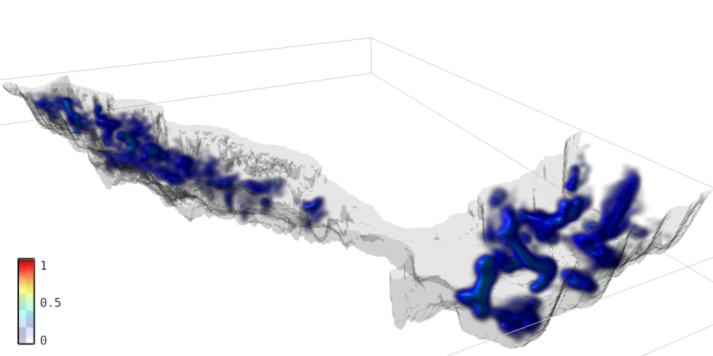
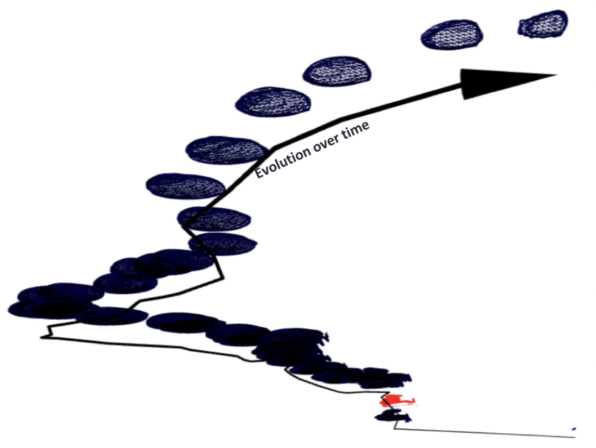
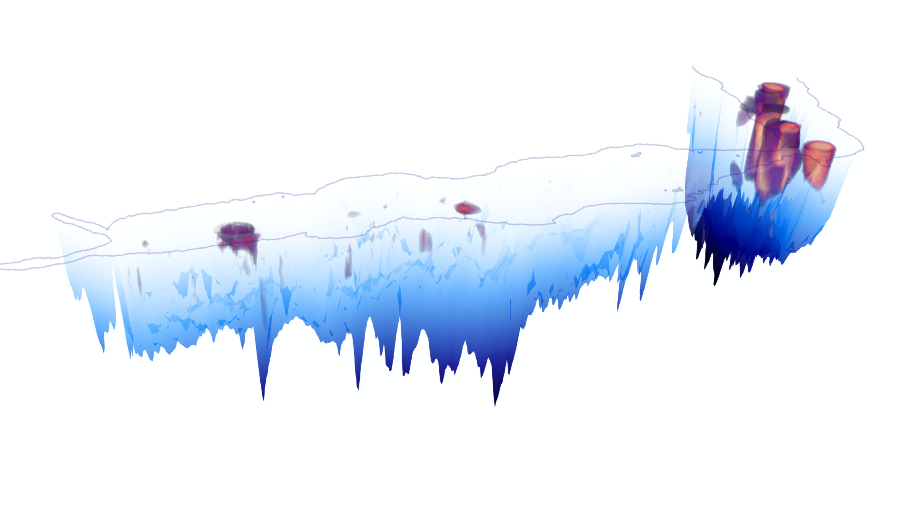
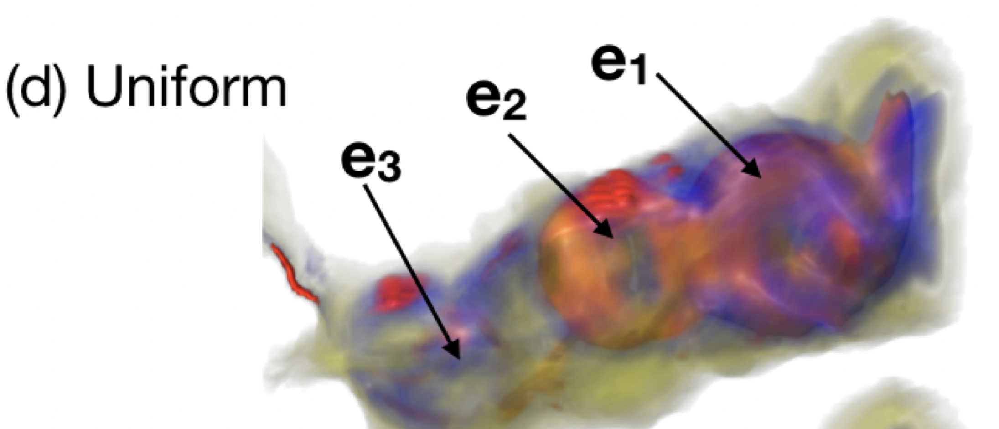
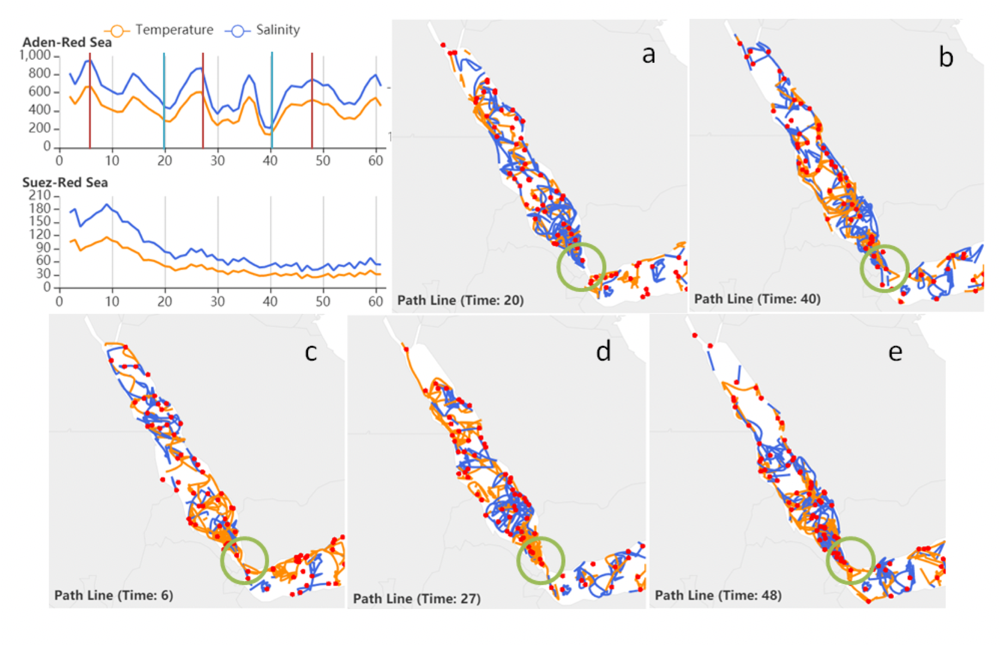
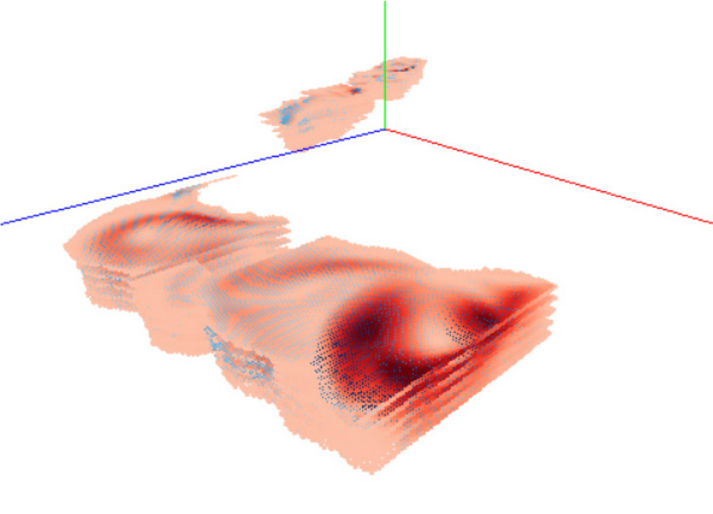

Results
All presentations are available via https://youtu.be/1o0nzZYfjn8.
Winning Entry
|  | Hennes Rave, Johannes Fincke, Steffen Averkamp, Lehmensiek H. N. Tague, Beate Tangerding, Luca Wehrenberg, Tim Gerrits, Karim Huesmann, Simon Leistikow, Lars Linsen, “Interactive Visual Analysis of Oceanographic Simulation Ensemble Data” |
“The winning team convinced the jury with a compelling presentation of their comprehensive tool that allows verification and exploration of domain science problems, including uncertainty, and illustration of some important domain science facts such as the outflow from the Red Sea into the Gulf of Aden.”
Honorable Mention
|  | Sedat Ozer, Karen Bemis, Weiping Hua, Arda Goktogan, Melike Aydoğan, Kevin Guo, Dujuan Kang, Li Liu, Deborah Silver, “The Use of 3D Optical Flow, Feature-Tracking and Token-Tracking Petri Nets to Analyze and Visualize Multiple Scales of Ocean Eddies” |
Other Submissions
|  | Steve Wolligandt, Janos Zimmermann, Thomas Wilde, Michael Motejat, Holger Theisel, ”Lagrangian Q-criterion and Transport of Salt and Temperature” |
|  | Tushar M. Athawale, Alireza Entezari, Bei Wang, Chris R. Johnson, ”Statistical Rendering for Visualization of Red Sea Eddy Simulation Data” |
 | Anke Friederici, Wito Engelke, Martin Falk, Ingrid Hotz, ”Tracing Eddy Transport in the Red Sea and Gulf of Aden” |
|  | Xiaoyang Han, Shiyu Cheng, Yifei An, Xuyi Lu, Guan Li, Guihua Shan, Hailong Liu, Pengfei Lin, ”Eddy-based visual analysis system for transport in the Red Sea” |
|  | Hiep Vo, Vung Pham, Tommy Dang, ”Red Sea Eddies Visualization for the Web” |